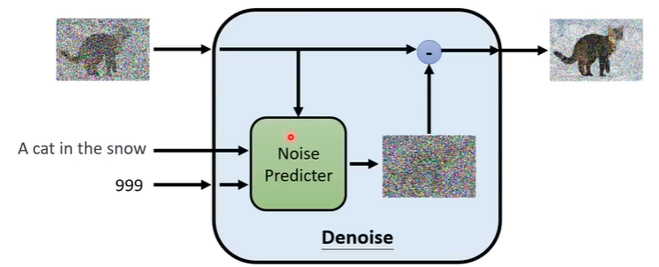

Geometry-Free
- NOVEL VIEW SYNTHESIS WITH DIFFUSION MODELS
本文提出了3DiM，一个用于3D新视角合成的扩散模型。3DiM的核心部分是pose-conditional image-to-image diffution model，将source view和它的pose作为输入，生成目标pose的新视角。3DiM用一种新技术，stochastic conditioning，生成3D consistent的多视角。输出视角是自回归生成的，在每个新视角的生成过程中，在每一个denoising step中选一个随机的conditioning view。

贡献：
- 3DiM, geometry-free image-to-image diffusion model，用于新视角合成
- stochastic conditioning 采样算法，更3D-consistent的输出

- 新的UNet结构变体 X-UNet，在两个输入帧（clean conditioning view, denoising target view）之间共享同一个UNet权重，加入了cross attention layers融合输入和输出视角的信息
- 对geometry-free视角合成模型的新的评估方法：3D consistency scoring，通过在模型输出上训练神经场来数值地衡量3D consistency
实验：SRN ShapeNet dataset，单视角生成higher fidelity, approximately 3D consistent
Geometry-Aware
in 2D image space
used in optimization
with pretrained models
- DREAMFUSION: TEXT-TO-3D USING 2D DIFFUSION
将扩散模型用于3D合成，需要大规模的带标签的3D数据集和高效的3D数据除噪结构，而目前我们不具备这些条件。此项工作通过使用预训练的2D text-to-image扩散模型进行text-to-3D合成，避免了这些限制。本文引入了基于概率密度蒸馏（probability density distillation）的loss，使2D扩散模型可以作为参数图像生成器优化的先验。将此loss用于类似DeepDream的过程，就可以通过梯度下降优化一个随机初始化的3D模型（NeRF），从任意视角渲染得到的2D图像都能达到较低的loss。文本对于的3D模型最终可以从任意视角被观察，重新打光，或加入任何3D环境。该方法不需要3D训练数据，也不需要修改图像扩散模型。

贡献：
- 提出DreamFusion，一种新的类似NeRF的渲染引擎，但是DreamFusion不需要3D或者多视角的训练数据，只需要预训练的2D扩散模型
- 为了将2D图像扩散模型迁移到3D空间，本文提出一种新的方法，Score Distillation Sampling（SDS）
- Score Jacobian Chaining: Lifting Pretrained 2D Diffusion Models for 3D Generation
扩散模型学习如何去预测梯度的向量场。本文提出对梯度使用链式法则，通过可微渲染器（被初始化为voxel radiance field）的Jacobian反向传播扩散模型的score。这种方法将多视角的2D scores融合进3D score，重新提出了用于3D生成的预训练2D模型。我们指出分布不匹配的技术难点，并提出了一种新的估计方法来解决它。我们在多个现成的扩散图像生成模型上跑了我们的算法，包括在LAION 5B数据集上训练的Stable Diffusion。
贡献：
- 提出了一种通过链式法则将2D扩散模型提升到3D的方法
- 阐释了使用预训练降噪器会遇到的out-of-distribution (OOD)问题，并提出Perturb-and-Average Scoring来解决该问题
- 指出了使用Perturb-and-Average Scoring作为梯度来进行优化的一些开放问题
- 阐述了Score Jacobian Chaining在3D文本驱动生成问题上的有效性
Appendix
Denoising Diffusion Probabilistic Model (DDPM)
Reverse Process: 从噪声开始，进行N步denoise，得到图像
Denoise模块内部做了什么：Noise Predictor预测图像中的噪声，图片减去噪声得到输出
如何训练Noise Predictor？
- 在图像的每一个step加入随机采样的噪声，就能得到加了噪声的图片
- 这个噪声在训练时被作为每一步Noise Predictor的GT
- 这个过程叫Forward Process/Diffusion Process
Text-to-Image：在每个Denoise步骤中，输入加上一段文字描述；Noise Predictor工作过程可以由下图表示

算法伪代码：

整个模型可以分成3个部分：

- text encoder：对结果影响很大（Imagen那篇文章有写），好的text encoder可以帮助生成数据集中没有出现过的那些文字对应的图像
- decoder：将中间产物（小图/latent representation）还原成所需大小的图片，可以单独训练，不需要标签；如果中间产物是latent representation，可以训练一个auto-encoder
- generation model：输入文字，输出图像
常见的diffusion model
- Stable Diffusion
- DALL-E series
- Imagen
评估
FID：Frechet distance between the two Gaussians，值越小越好，假设两份采样是Guassians distribution
CLIP：Contrastive Language-Image Pre-Training，用400 million image-text pair训练出来的模型，CLIP score越大越好
Stable Diffusion以及几种scheduler的对比
Ancestral sampling